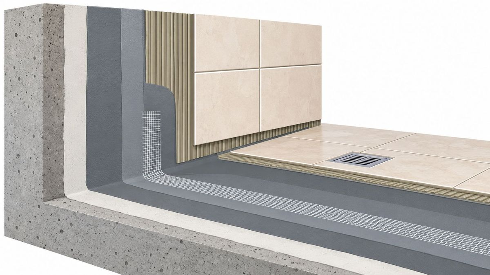

полноценная гидроизоляция санузла 4 м² — это 10–12 м² поверхности, 3–4 кг мастики на два слоя и 18 000–45 000 руб. с работой. Заход на стены — 200–300 мм, в душевой зоне — 1 800–2 000 мм. Экономия 6 000–8 000 руб. на мастике и ленте оборачивается ремонтом у соседей на 80 000–250 000 руб.
Из чего состоит узел
| Слой | Материал | Расход | Функция |
|---|---|---|---|
| Подготовка | штукатурка, ремонтный состав | 1–3 кг/м² | ровное основание без раковин |
| Грунт | бетонконтакт или акриловый | 0,15–0,25 кг/м² | сцепление мастики с основанием |
| Лента в углах | гидроизоляционная, 100–120 мм | 1 м на 1 м угла | компенсация трещин |
| Мастика, 1-й слой | цементно-полимерная | 1,5–2 кг/м² | основной барьер |
| Мастика, 2-й слой | та же | 1,5–2 кг/м² | перекрытие пор и стыков |
| Защита | плиточный клей | 4–6 кг/м² | механическая защита мембраны |
Общая толщина сухого слоя — 1,5–2 мм. Тоньше 1 мм мембрана рвётся при подвижках здания, толще 3 мм — трескается при высыхании.
Материалы: обмазочная, рулонная, полимерная
| Тип | Цена | Срок работ | Когда выбирать |
|---|---|---|---|
| Цементно-полимерная обмазочная | 250–600 руб./кг | 2–3 дня | санузел под плитку, 90 % случаев |
| Рулонная битумно-полимерная | 180–450 руб./м² | 1–2 дня | пол без плитки, душевая с трапом |
| Полиуретановая жидкая | 600–1 200 руб./кг | 1–2 дня | сложные узлы, деревянные основания |
| Пропиточная (проникающая) | 200–400 руб./кг | 1 день | только как дополнение, не самостоятельный слой |
Проникающая гидроизоляция заполняет капилляры бетона, но не создаёт мембрану: при трещине 0,3 мм она не работает. Её применяют перед обмазочной, а не вместо неё.
Расход и толщина
| Поверхность | Площадь санузла 4 м² | Мастика на 2 слоя |
|---|---|---|
| Пол | 4 м² | 12–16 кг |
| Стены, заход 250 мм | 6–7 м² | 18–28 кг |
| Душевая зона до 2 000 мм | 3–4 м² | 9–16 кг |
| Итого | 10–12 м² | 30–45 кг |
Расход зависит от впитывающей способности основания: газобетон и старая штукатурка берут на 20–30 % больше бетона. Сухая смесь 20 кг стоит 5 000–12 000 руб., на санузел нужно 2–3 мешка.
Заход на стены и душевая зона

| Зона | Высота захода | Почему |
|---|---|---|
| Пол по всей площади | — | основная зона протечек |
| Стены по периметру | 200–300 мм | брызги и мытьё пола |
| Зона душа | 1 800–2 000 мм | прямой поток воды |
| Стена за ванной | до борта + 300 мм | конденсат и перелив |
| Стена с смесителем | 1 200 мм | протечки из-под эксцентриков |
Если в санузле трап, мембрана заходит под него и прижимается фланцем. Вокруг трапа — дополнительный слой мастики и лента шириной 120–150 мм.
Узлы: углы, трубы, трап
| Узел | Что делать | Цена материала |
|---|---|---|
| Внутренний угол | лента 100–120 мм в 2 слоя мастики | 100–200 руб./м |
| Ввод трубы | манжета или лента с заходом 50 мм | 150–400 руб./шт. |
| Трап | фланец с прижимным кольцом | 800–2 500 руб. |
| Порог / борт ванны | лента и заход мембраны на 50 мм | 100–200 руб./м |
Углы — самое слабое место: 70 % протечек начинаются именно там. Ленту укладывают до первого слоя мастики, вдавливают шпателем и перекрывают вторым слоем.
Порядок работ
- Демонтировать старую плитку и стяжку, очистить основание до бетона.
- Заделать трещины и раковины ремонтным составом, дать высохнуть 24 часа.
- Прогрунтовать поверхность в 1–2 слоя, просушить 4–6 часов.
- Наклеить ленту в углах и вокруг труб на первый слой мастики.
- Нанести два слоя мастики с межслойной сушкой 4–6 часов, второй — перпендикулярно первому.
- Проверить сплошность визуально и сделать испытание водой на 24 часа (для пола).
- Уложить плитку на клей не раньше чем через 24–48 часов.
Смета санузла 4 м²
| Позиция | Количество | Стоимость |
|---|---|---|
| Грунт | 5 л | 800–1 800 руб. |
| Мастика 20 кг | 2–3 мешка | 10 000–24 000 руб. |
| Лента 120 мм | 8–12 м | 1 000–2 400 руб. |
| Манжеты труб | 3–4 шт. | 600–1 600 руб. |
| Работа | 10–12 м² | 6 000–14 000 руб. |
Итого 18 400–43 800 руб. «под ключ» без демонтажа плитки. Демонтаж и новая стяжка — плюс 8 000–20 000 руб.
Что проверить в смете подрядчика
| Пункт сметы | Норма | Признак занижения |
|---|---|---|
| Площадь обработки | 10–12 м² на санузел 4 м² | указано 4 м² — считают только пол |
| Число слоёв | 2 | «один толстый слой» — экономия 30 % |
| Лента в углах | 8–12 м | не указана вообще |
| Заход на стены | 200–300 мм | 50–100 мм |
| Испытание водой | 24 часа | отсутствует |
Средняя работа по гидроизоляции санузла — 6 000–14 000 руб. Если подрядчик просит 3 000 руб., он либо считает один слой, либо не включает углы и трубы. Разница в 3 000 руб. на этапе работ — это 80 000–250 000 руб. ремонта у соседей при первой протечке.
Ошибки и их цена
| Ошибка | Последствие | Цена исправления |
|---|---|---|
| Один слой вместо двух | поры и микротрещины | переделка 18 000–45 000 руб. |
| Нет ленты в углах | трещина по стыку через 1–2 года | вскрытие плитки 25 000–60 000 руб. |
| Заход на стены 50 мм | вода за плиткой у пола | ремонт у соседей 80 000–250 000 руб. |
| Плитка на мастику без клея | отслойка через 6–12 месяцев | полная замена облицовки |
Чек-лист перед плиткой
- Два слоя мастики, второй перпендикулярно первому.
- Лента во всех внутренних углах и вокруг труб.
- Заход на стены 200–300 мм, в душевой — 1 800–2 000 мм.
- Испытание водой на полу выдержано 24 часа.
- Плитка уложена не раньше чем через 24 часа после второго слоя.
Частые вопросы
Сколько стоит гидроизоляция ванной 4 м²?
Материалы и работа — 18 400–43 800 руб. С демонтажом старой плитки и новой стяжкой — до 60 000 руб.
Можно ли сделать гидроизоляцию поверх старой плитки?
Нет. Мастика не держится на глазури и швах, а трещины под плиткой остаются. Нужен демонтаж до основания.
Сколько сохнет мастика?
Межслойная сушка — 4–6 часов при +20 °C, полная полимеризация — 24–48 часов. Плитку кладут после полного высыхания.
Нужна ли гидроизоляция под ванной?
Да, на всей площади пола. Протечка из-под ванны — самая частая причина залива соседей, и заметить её можно только по пятну на потолке снизу.
Обязателен ли трап в душевой?
Нет, если душевая кабина с поддоном. Для душа «в пол» трап обязателен, и вокруг него делают усиленный узел с фланцем.
Чем проверяют герметичность?
Испытанием водой: на полу делают бортик, заливают 20–30 мм воды и выдерживают 24 часа. Протечка проявится на потолке нижнего этажа.
Можно ли использовать гидроизоляцию для бассейна?
Нет, бытовая цементно-полимерная мастика не рассчитана на постоянное давление воды. Для бассейна нужны эластичные двухкомпонентные составы с армированием.
Нужно ли гидроизолировать стены, если плитка с затиркой?
Да. Затирка паропроницаема и впитывает воду, а клей под плиткой не является гидробарьером. Мембрана под плиткой — единственный слой, который держит воду.
Источники
Материал подготовлен с опорой на следующие документы и данные:
Дисклеймер
Материалы журнала «Ремонт на примерах» носят информационный характер. Приведённые цены, сроки и нормативы являются ориентировочными: они зависят от региона, состояния объекта, уровня исполнителей и текущей рыночной ситуации, поэтому не могут служить точной сметой или гарантией результата. Перед началом работ проконсультируйтесь со специалистами и проверяйте актуальные требования нормативных документов. Редакция не несёт ответственности за решения, принятые на основании этих материалов.